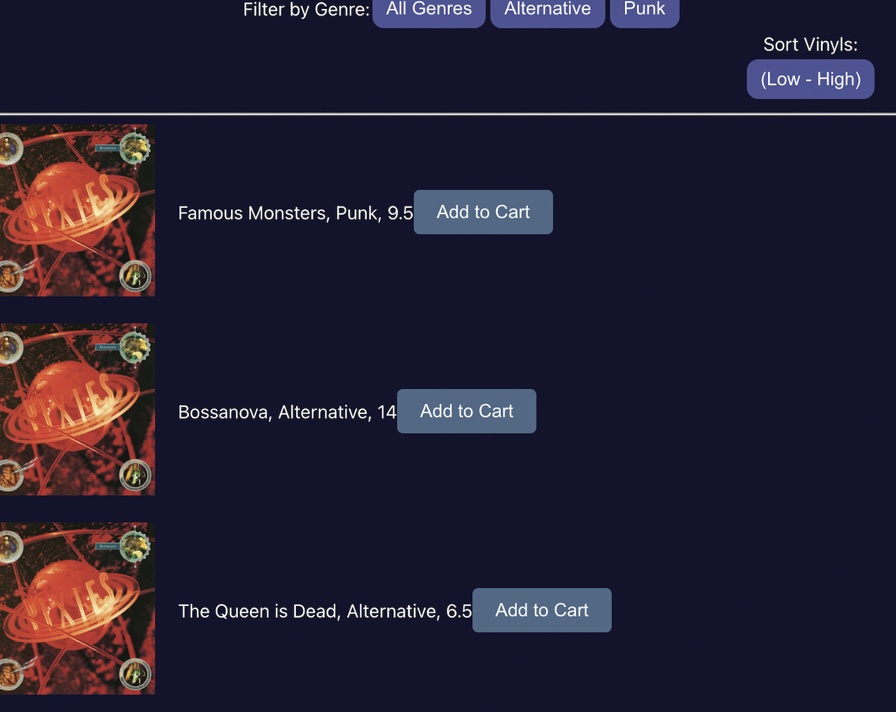
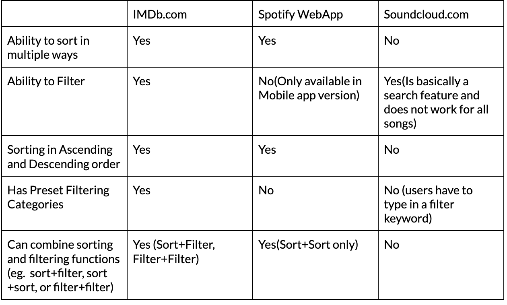
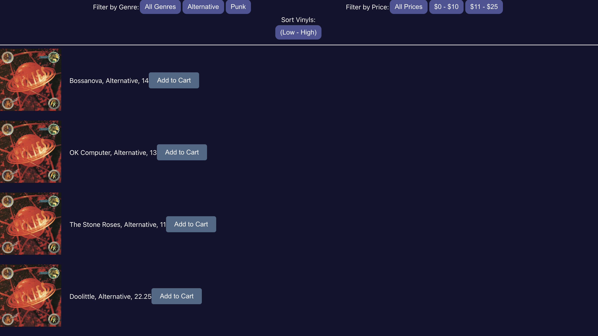
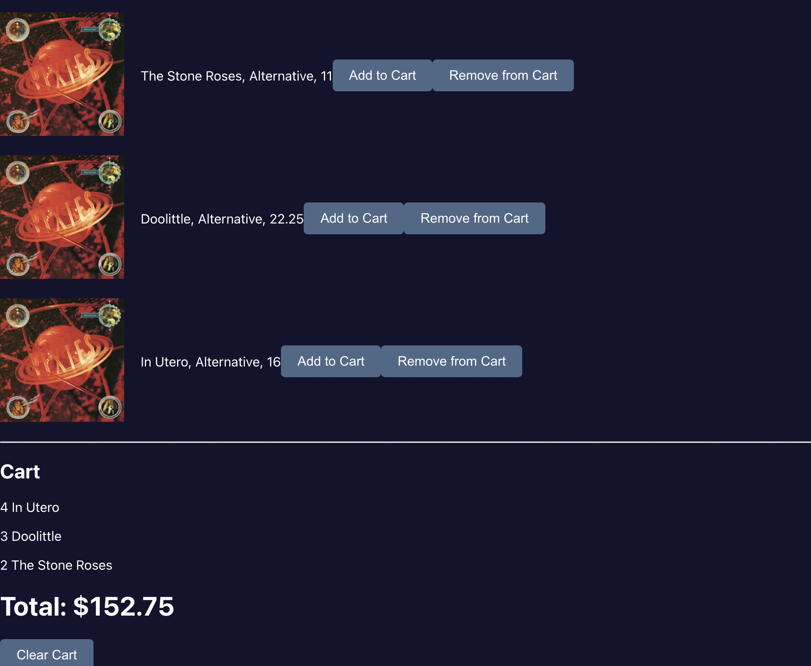
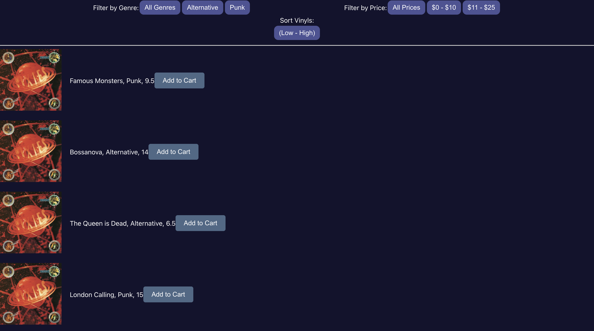

What is this?
For this project, I am experimenting with creating a list-based interface that would allow users to select items out of a given list and aggregate them. Additionally, this webpage would allow users to filter based on two separate criteria and sort based on one.

The Problem
The inspiration for creating a vinyl webstore came from my experience of shopping at vinyl stores. Because of the busy-ness and often jumbled nature of vinyls to be sold at various vinyl stores that I had experienced shopping at, I thought of creating a website that would allow me to search for vinyls conveniently. In terms of “convenience,” I wanted to allow users to be able to select their price range and be able to sort vinyls alphabetically. After shopping in vinyl stores, I often wonder whether there had been better options. However, often my searches for vinyls come to quick ends because I am too tired to keep browsing through crates of disordered vinyls.
Process
In order to identify which features for filtering and sorting I’d want to incorporate in my vinyl website, I created a competitive analysis chart based on three different webpages that have a favorting function that allows for filtering and sorting.

Summary of Findings
The three websites I chose all have major differences in their favoriting function. IMDb had a clear visual hierarchy when it came to navigating the sorting and filtering functions. Overall, it had relevant preset sorting and filtering features. The sorting feature appears as a dropdown menu, but it does not allow combining two or more separate sorting selections. The two music sites I chose were less successful in terms of sorting and filtering, but Spotify also had a clear visual hierarchy which made using its features easy to use. The most successful factor in the Spotify favoriting function was the ability to sort alphabetically with any sorting selection. For Soundcloud, the “filter” function was not a filter after all but a search feature that did not work for all but one of the songs in my favorites. I also was not able to sort.
Solution
I liked the idea of having filtering and sorting work in conjunction for users. IMDb.com was a prime example of this. I decided to implement filtering features that worked well with a sorting feature. For example, if I choose to filter by a price range of $0 - $10, I would want to be able to sort in ascending price order to see cheaper options first and be able to scroll down to more expensive options.
In this, I decided to add a filter to sort by genre and another filter to sort by price. Additionally, I chose to sort based on price in ascending order. Users are able to modify filters and sorting by clicking on respective buttons and can add and remove items from their cart. The cart also has a feature that allows users to reset their additions and has a running total of the vinyls “to be purchased.”


